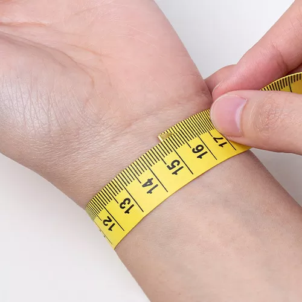

測量指南
手環篇
以一條布尺繞在平時戴手錶的手腕處手腕繞一圈，剛剛好貼合即可，量出來的長度再加上裕量1.25公分(戴起來比較舒適) 。
項鍊篇

16英吋（約41cm）：下垂至約鎖骨位置
18英吋（約46cm）：下垂至鎖骨下方位置（是較為常見、較受歡迎的選擇）
20英吋（約51cm）：下垂至領口位置
戒指篇

以一條布尺繞在要戴戒指的手指(布尺要拉很緊)繞一圈，量測三次左右取平均值，量出來的長度再比較左側對照表來看是幾號戒 ，如量測出介於兩號之間取小值。
手環篇
以一條布尺繞在平時戴手錶的手腕處手腕繞一圈，剛剛好貼合即可，量出來的長度再加上裕量1.25公分(戴起來比較舒適) 。
項鍊篇
14英吋（約36cm）：與脖子圍相當(緊繞脖子)
16英吋（約41cm）：下垂至約鎖骨位置
18英吋（約46cm）：下垂至鎖骨下方位置（是較為常見、較受歡迎的選擇）
20英吋（約51cm）：下垂至領口位置
戒指篇
以一條布尺繞在要戴戒指的手指(布尺要拉很緊)繞一圈，量測三次左右取平均值，量出來的長度再比較左側對照表來看是幾號戒 ，如量測出介於兩號之間取小值。